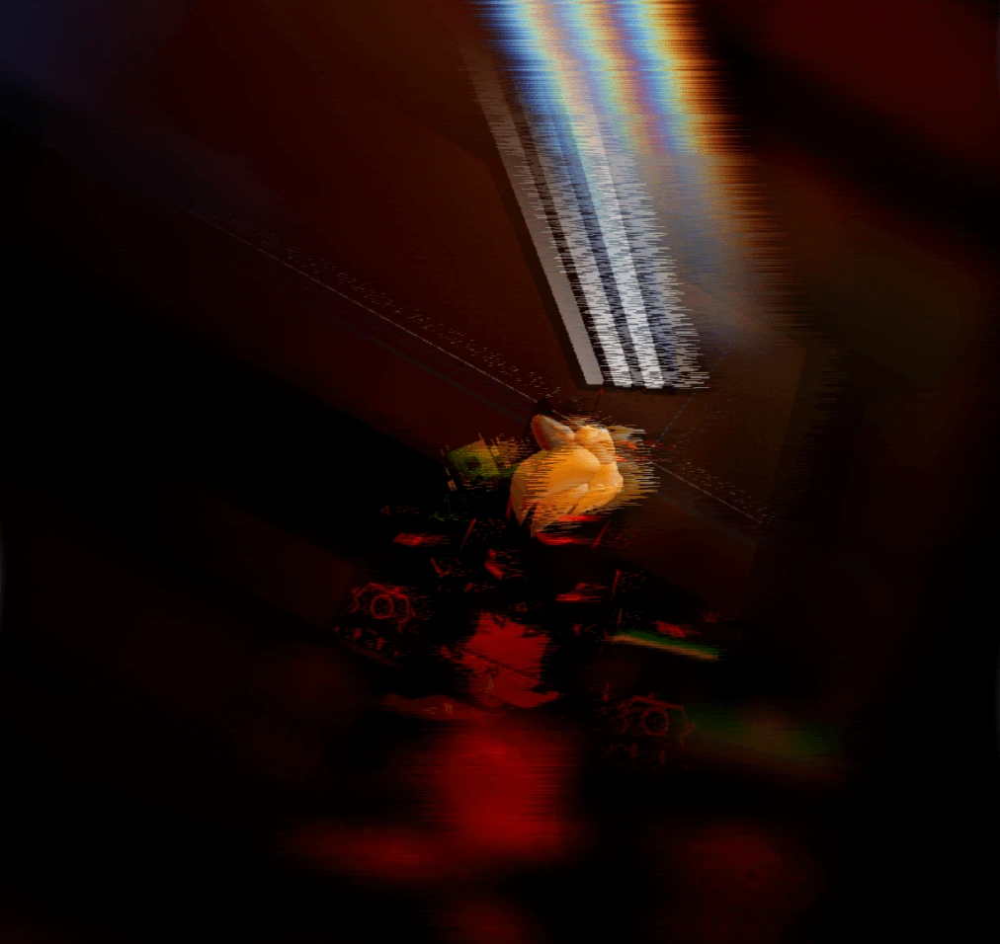

Nombre: HecTéx
Especie: Protogen
Subespecie: Antropomórfico Híbrido
Identificación: EAZ#666
Peso: 157kg
Altura: 157cm
Género: Masculino
Clasificación: Potens
Nota: El sujeto no admite aún fotografías, pero ha ofrecido una imagen suya corrompida. Se mantiene la interrupción de cualquier aparato tecnológico capaz de crear imágenes y la imposibilidad de vigilancia por cámaras. Se reitera su afirmación de que permitirá ser fotografiado una vez defina su forma final.
Información
El sujeto, cuyo nombre original era H18l1A4, era un lobo ártico con mutaciones de color, presentando manchas de color rojo sangre en y175 217h175, q1Ay17 m 218y17w18 r18 q17p18n17. Debido a estas mutaciones, fue maltratado y despreciado por todos, incluyendo a su propia familia. En su tribu asistía a una escuela de magia, donde demostró ser un 1B51B174191A r18 z17t1917 18lq182q191A117y, 5191 118q18519r17r r18 1B5174 p175hYA1.
El constante desprecio llenó su alma de odio, lo que atrajo la atención de 1B1 r18z1A1191A 21Ar1841A51A r18y 191s417z1B1r1A. Durante una clase, 18y r18z1A1191A tomó el control de H18l1A4, quien procedió a matar a todos los demás lobos árticos de la tribu de forma extremadamente violenta y sangrienta. Fue detenido gracias al director de la escuela, quien logró debilitar 17y r18z1A1191A lo suficiente para que H18l1A4 recuperara el control. Sin embargo, H18l1A4 huyó inmediatamente de la tribu, la cual quedó completamente destrozada con solo unos pocos supervivientes.
Durante años, H18l1A4 se estuvo escondiendo y cambió su nombre a HecTéx. Se dedicó a estudiar tecnología, mecánica y magia para s17p419q174 1B1 q1B18421A 11B18i1A m q17zp19174 51B 5184. H4175 1B1 2174 r18 17Y771A5 y1At4YA v17q184518 1B1 q1B18421A m 174z17r1B417 r18 z18h17y, m 1B5171r1A y17 z17t1917 21Ar1841A517 31B18 q1A11AqY917, s1B5191A1YA 51B q1B18421A m y17 174z17r1B417, y utilizando la poderosa magia que conocía, fusionó su cuerpo con y17 174z17r1B417, resultando en un protogen capaz de usar magia muy poderosa.
A día de hoy, HecTéx es un cazarrecompensas y explorador extremadamente eficiente. Tiene un acompañante secreto, 21841A z1Bm 21Aq1A 518 517p18 r18 Y8y. HecTéx desea identificarse como un Máquina cazador asesino, sediento de sangre, aunque sí se preocupa por aquellos a quienes considera amigos.
Según los datos estadísticos, la entidad presenta una estatura de 1.57 metros, un peso total de 157 kilogramos y una apariencia de edad de 19 años. Se hipotetiza que el elevado peso corporal se atribuye a la mecanización de su cuerpo o a la presencia de componentes metálicos pesados integrados en diversas partes del mismo.
Observaciones y Comportamiento
UPEA Corp. — ExpedienteExhibe un patrón de actividad dicotómico, caracterizado por periodos de calma aparente intercalados con fases de alta movilidad. Se observa una aversión a la inactividad prolongada.
Su metabolismo cibernético le permite asimilar tanto componentes electrónicos como materia orgánica. La materia orgánica sirve como sustrato energético para actividades de alta demanda, mientras que los componentes electrónicos parecen funcionar como snacks, parece que los disfruta mucho de comer. Su fuente de energía primaria es la energía eléctrica, con una preferencia notable por fuentes renovables.
Posee una vocalización potente, de tonalidad no grave. Alternativamente, puede emplear una voz sintetizada con mínima modulación tonal, persistente a través de diferentes estados emocionales. Esta modalidad robótica se utiliza en situaciones de incapacidad fonatoria o por elección voluntaria.
A pesar de su naturaleza inherentemente solitaria, demuestra una marcada apreciación por la compañía social. Se han registrado episodios de expresión y relajación fisiológica en presencia de individuos considerados "compañía".
Parece ser capaz de estar en múltiples lugares a la vez, q1Az1A 519 s1B184171 qy1A1185. Más información y observación son requeridos para continuar este documento.
La información registrada en Observaciones y Comportamiento y la información en general, puede ser modificada para actualizar los datos necesarios, proporcionados por la propia entidad EAZ o derivados de los estudios e investigaciones realizados por UPEA Corporation.
Última Actualización de la Información: 19/04/2026 - 13:06 UTC+2
fb8 Vb7 b7bbAHb7RbA dbBb8 YbAf bAPfb8eIb7RbAeb8f Vb7b fb9RbA b7bb9dbBb9Yb7RbAf, cbAfb9PYb8Zb8bHb8 Hb7ZPb9YDb fb7Pb8 dbBb8 Vb7f Yb8YERbA b8fHb8 b8Lcb8Rb9b8bHb8... Ib9Tb9Yb7 HbB b8bHbAebbA.